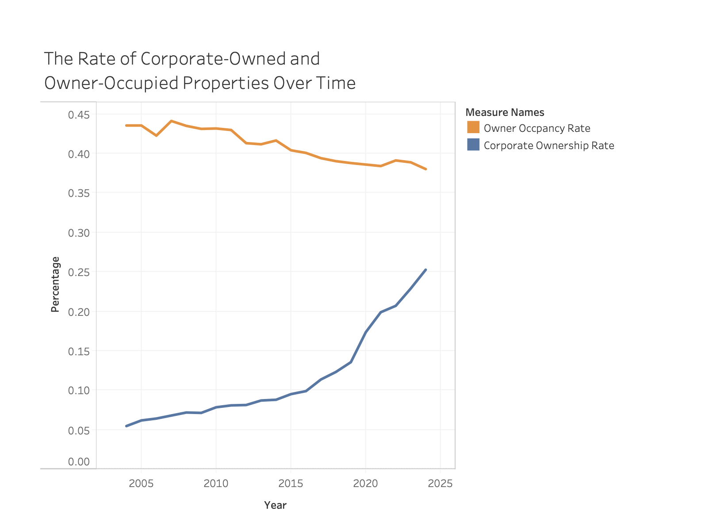
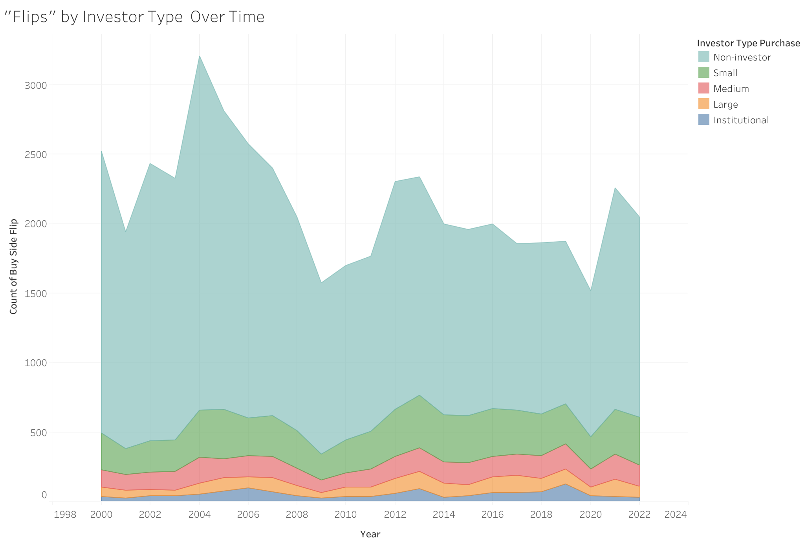
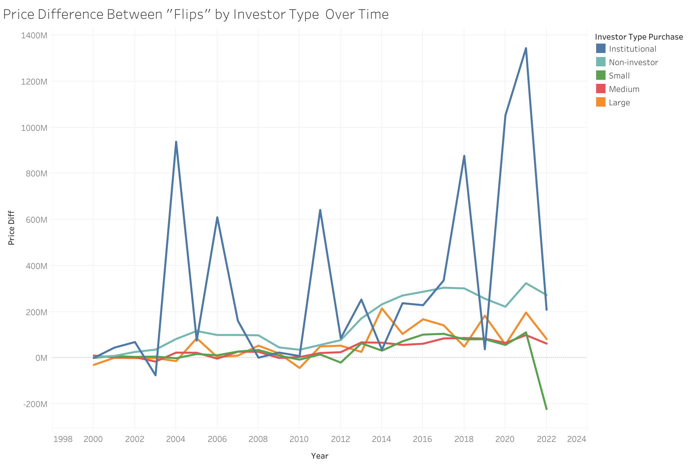
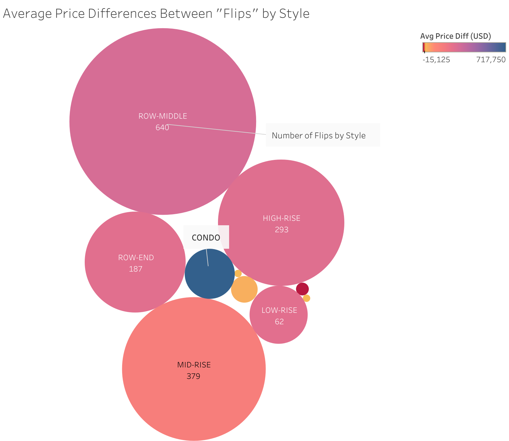
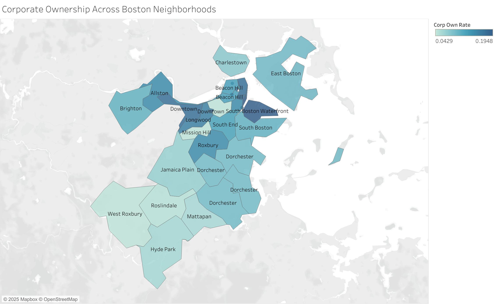
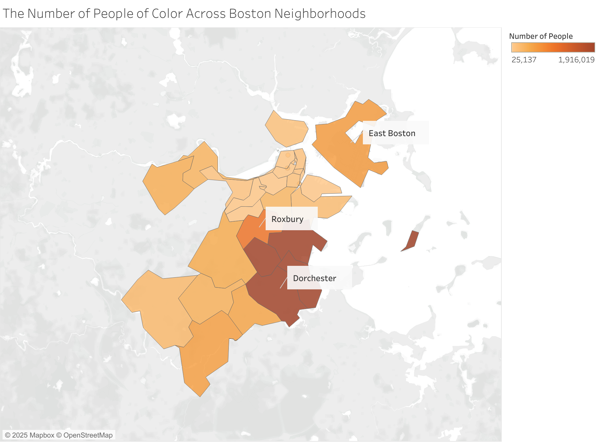
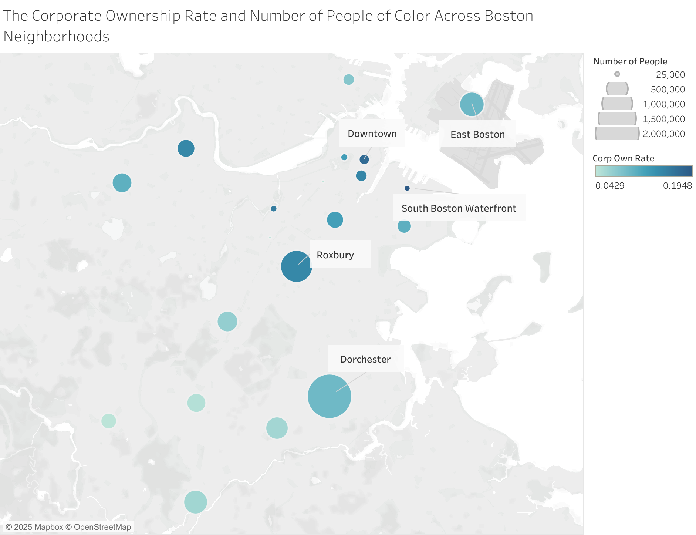
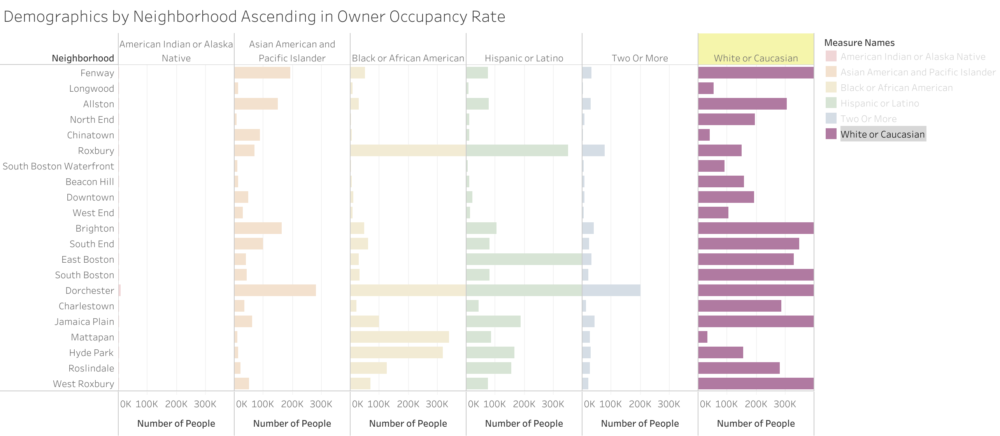
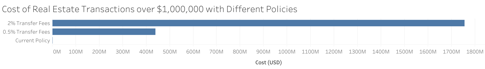
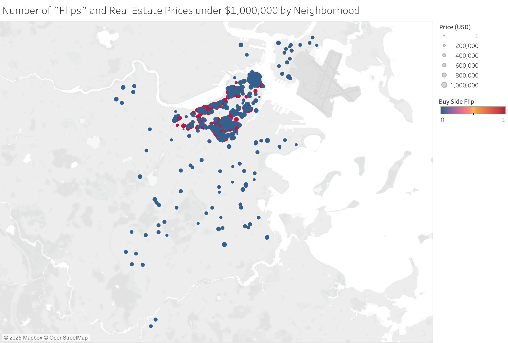

How has corporate investing in Boston housing changed over time?
How has corporate ownership impacted communities of color?
How much would transfer fees cost corporations?
Discoveries & Insights
To investigate speculation, I used the dataset that showed the change over
time in corporate ownership and owner occupancy rates in the Boston neighborhood
with Census and joined it with the Boston neighborhood zip code dataset on the
neighborhood to visualize it. I also used the real estate transactions data to
learn who was investing in housing. The motivation behind this work is to better
understand how the commodification of housing has changed over time. Cost of
living and rent has been skyrocketing in Boston in recent years, while the quality
of housing and management have been decreasing (Vogell 2022). Additionally,
mortgage lenders, such as Freddie Mac and Fannie, have helped bigger investors
over smaller ones. The effects of speculation have especially burdened
communities of color (Homes for Profit 2022). To remediate this issue,
Bills have been proposed in the Massachusetts House and Senate to add
transfer fees of 0.5-2% to curb some of these practices (Transfer Fee 2025).
However, there is still more that can be learned about who these investors are
and what impacts it will have on communities.

To understand housing speculation over time, I first plotted the rate of owner occupancy rate and corporate ownership on the same axis to see how they change over time. The owner occupancy rate and corporate ownership rates were given for each neighborhood, so I took the average of the rates of all neighborhoods for each year. This visualization shows how owner occupancy is decreasing, while the corporate ownership rate is increasing, which suggests increasing commodification of housing.

Seeing the rate of corporate ownership and owner occupancy, I was curious about not just how corporate ownership was changing over time, but also who was behind real estate “flipping.” Consequently, I plotted the number of buy side flips over time to see the types of real estate purchases. I found that the most common “flipping” was coming from non-investors and smaller investors in Boston. However, many of the buy side flip values are null, which were excluded from the visualization, so there may be more “flips” than are captured.

After seeing the types of investors by the buy side flips, I wanted to visualize whether there were differences in the types of transactions these investors were doing. As a result, I looked at the sum of the price differences between flips by investor type over time. While non-investors and small investors were doing the most flips, they didn’t result in as many gains as institutional investors. Even though the institutional investors made the fewest “flips,” they made much more money than other investors. Similar to the buy side flips data, the price difference between flips contained many null values, which were excluded; therefore, there may also be undocumented price differences that could skew these findings.

In addition to who is part of increasing the commodification of housing over time, I also wondered what types of homes were being “flipped.” I looked at the style attribute and found many null values and style types which did not have any data, which I removed before visualization. Additionally, I filtered for when buy side flips were 1, meaning that the transaction was deemed a flip. I set the color of the bubbles in the chart to represent the average price difference for the style type and labelled each type with the number of flips. I added additional labels to clarify what the numbers and bubbles were. I found that condos lead to the greatest returns, but were not the most common. Instead, the most common “flip” are single family homes.

To better understand the spatial distribution of the data and where corporate ownership was most prevalent, I visualized the average corporate ownership rate of each neighborhood on a map of Boston through zip code. I found that corporate ownership was highest in the South Boston Waterfront and Downtown. It is also worth noting that when I labeled the map with the neighborhood for the zipcode, I noticed that the neighborhood and zip code data were not perfectly aligned, since some neighborhoods spanned multiple zip codes. I remedied this in further visualizations by removing extra annotations and making sure to do calculations by neighborhood and not zip code.

To better understand the dataset spatially and how communities of color are impacted by corporate ownership, I combined the counts for the number who identified as Black or African American, Hispanic or Latino, Asian American and Pacific Islander, American Indian and Alaska Native, and two or more races in the Census data and displayed them on a map of Boston by zip code. I found that more people of color lived in Dorchester, Roxbury, and East Boston, which are also areas that have been historically redlined (Mapping Inequality). There is a need to better understand how housing practices, such as the commodification of housing, are impacting these neighborhoods in the present to stop further perpetuation of harm and problematic practices.

Then, I wanted to compare corporate ownership rates alongside how many people of color were in each neighborhood to understand corporate ownership’s impact on communities of color. I visualized the number of people through the size of the circle and corporate ownership rate through color. I added labels to pinpoint key areas and was able to exclude the duplicate circles when there were multiple neighborhoods for each zip code. While corporate ownership is occurring most in South Boston Waterfront and Downtown Boston, communities in Roxbury, Dorchester, and East Boston which have more people of color still have higher rates of corporate ownership.

While the spatial data helped visualize where communities of color resided in comparison to corporate ownership rates, there are further nuances between each of the different groups that I wanted to further understand. I removed null values and sorted the neighborhoods by ascending owner occupancy rate to visualize the differences in owner occupancy across areas and groups of people. I set the scale for the number of people to be the same across the groups to make direct comparisons easier. American Indians and Alaska Natives and people of two or more races resided the most in Dorchester and Roxbury; Asian Americans and Pacific Islanders resided the most in Fenway, Allston, Brighton, and Dorchester; Black or African Americans resided the most in Roxbury, Dorchester, Mattapan, and Hyde Park; and Hispanic or Latinos resided the most in East Boston. While it was neighborhood dependent, areas with higher owner occupancy rates tended to be more suburban and more white people lived there, such as Roslindale and West Roxbury.

To understand the impact of different policy proposals, I charted the cost in transaction fees if this policy were applied to the existing dataset. I filtered the data to real estate transactions over $1,000,000, which is the amount mentioned in the proposed bill to the Massachusetts House and Senate (Transfer Fees 2025). Then I multiplied the sum of the home price sales in the real estate transactions by the current fees (0%) and the minimum and maximum of the proposed range (0.5%-2%). This visualization highlights how transfer fees could potentially deter the “flipping” of housing by potentially costing more than $1,750,000,000.

While the proposed bill suggested that homes over $1,000,000 should have transaction fees, I wanted to better understand the scale of home speculation for more affordable homes and where they were located. I visualized the latitude and longitude data from the residential sales data, but found many values outside of the Boston area, such as those in the middle of the ocean. I removed all data points outside of the Boston area and then showed them on the map with red indicating a flip and blue indicating that it wasn’t a flip and size showing the price. This revealed that flipping practices were still happening at lower home prices, especially downtown, suggesting that there may need to be additional policies to protect affordable housing from speculation.
Summary
Overall, I found that corporate investing in Boston has increased over time. This is especially concerning given the current housing situation in Boston where there is a much higher demand than supply. Communities of color have historically been the most impacted by housing speculation and my exploratory analysis found this to continue to be the case. To mitigate this, policymakers have proposed adding transfer fees on homes over $1,000,000. However, many homes are still flipped under $1,000,000. These visualizations suggest a need for better policies to create more equitable housing opportunities.